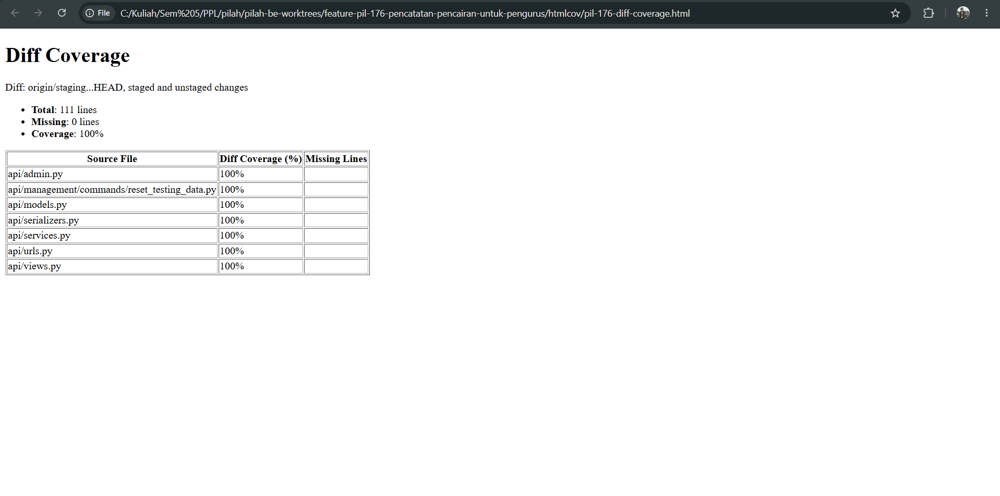
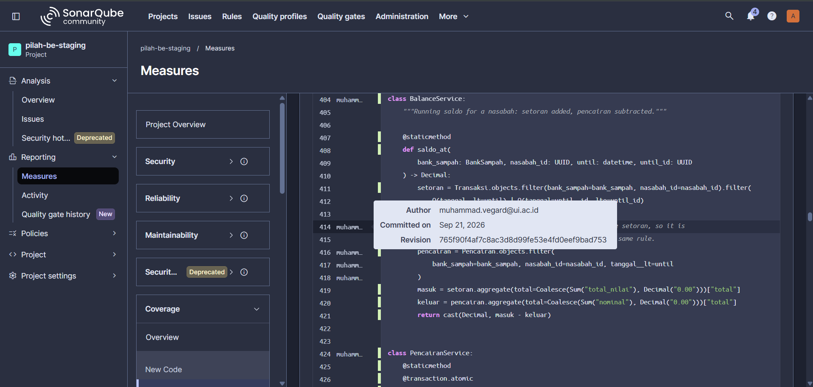
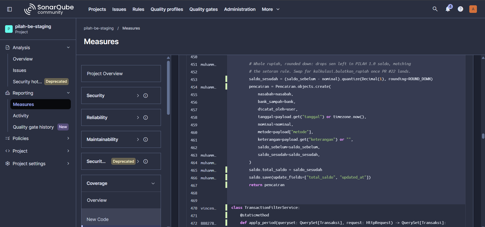
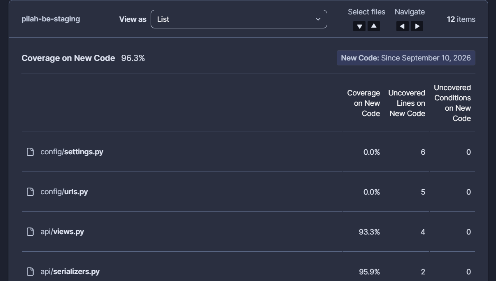
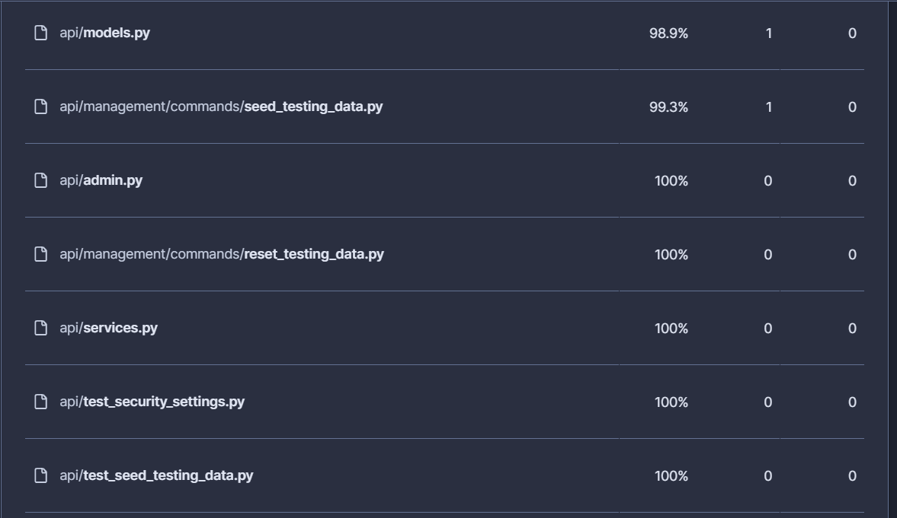
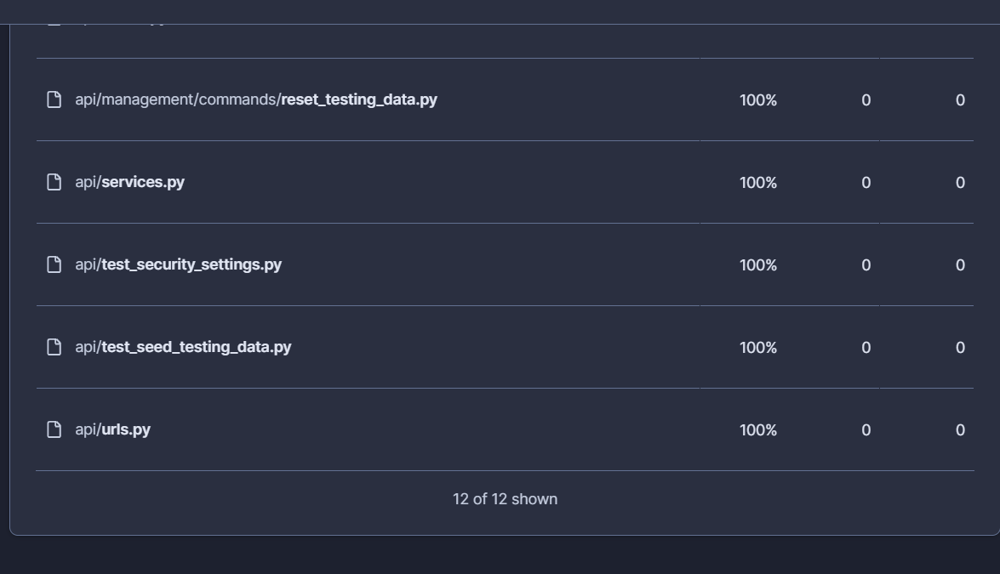

Test Driven Development¶
Competency level: 3
Both week-1 merge requests built test-first: 100% of my new backend code covered, 88% diff coverage on mobile, disciplined red-green commits, positive, negative and corner cases, and mock-based test isolation.
Backend — pilah-be #19¶
Coverage proof¶
- My changes: 111 of 111 statements covered (100%). Whole backend: 90%.
- Full evidence, with how it was measured and a line-by-line breakdown: PIL-176 Coverage
- HTML report: pil-176-diff-coverage.html
diff-cover: only the lines I changed¶

Coverage of only the lines my branch changes against staging, excluding tests and migrations.
SonarQube: my code, covered, with authorship¶

BalanceService: the tooltip shows me as the author (revision 765f90f); every executable line has a green (covered) bar.

PencairanService.create_pencairan: rounding, record creation and saldo update, all covered. Line 470 onward belongs to another author.
SonarQube: Coverage on New Code, all 12 files¶



The rows below 100% (config/, views.py, serializers.py, models.py, seed_testing_data.py) are uncovered lines written by other team members since 10 Sep, traced with git blame on the evidence page. My lines in those files are covered.
15–21 Sep — red-green pairs¶
Each behaviour is a failing test(...) commit followed by the feat(...)/fix(...) commit that makes it pass.
| Behaviour | Red | Green |
|---|---|---|
| Recording a pencairan lowers the saldo exactly once | 72dcc72 |
fbab07b |
| Nominal above the saldo is rejected, saldo unchanged | 0e7a3f3 |
e65ff1d |
Zero/negative/decimal nominal and future tanggal rejected |
f876c63 |
6615dc8 |
| Detail readable only within the bank (404/403/401) | 9377c90 |
cb9da4a |
| Saldo history subtracts pencairan | 575d0f6 |
5447710 |
| List filtered by nasabah | 9c40890 |
999882b |
| Pending/rejected nasabah cannot be paid out (review finding) | 9ee3525 |
49cd153 |
| Same-instant setoran/pencairan ordered deterministically (review finding) | 7ff2cdf |
765f90f |
| Legacy saldo with sen rounded down (review finding) | 9b135b2 |
2981176 |
22 Sep¶
| Change | Commits |
|---|---|
| Reset command must report leftover pencairan (red → green) | f147fe3 → b98a29b |
| Refactor: remove unreachable list branch, tests stay green | bd38dc6 |
Mobile — pilah-mobile #26¶
Built the same way on 22 Sep: a failing test(...) commit for each slice, then the feat(...) that makes it pass. 24 new tests, 230 → 254.
| Behaviour | Red | Green |
|---|---|---|
| Nominal validated against the saldo | 27fcd06 |
869ae71 |
| Saldo read and pencairan posted with the right body | 02ddd84 |
dcb7e48 |
| Form cubit: saldo loading, submission, double-tap guard | 6f90aab |
2eaca63 |
| Form page: confirmation, success sheet, server error inline | 9887d7e |
e30e6ab |
| Entry point in the nasabah detail sheet, active nasabah only | add3e87 |
98e9b15 |
Diff coverage 88.07% on the lines this PR changes (CI gate 25%), overall 33.4%. The uncovered lines are the route builder, the DI wrapper and two pass-throughs.
A widget test caught a real defect rather than confirming the code: the submit button sat below the fold in a ListView, so the test could not tap it. The form became a SingleChildScrollView and the tests call ensureVisible (6f4e1ea).
Mobile test cases¶
- Positive: valid nominal recorded; saldo reloaded after success; entry point opens the form for an active nasabah.
- Negative: nominal above saldo, zero and empty; server 422 on
nominalshown inline; other failures shown as a toast; saldo load failure disables submit. - Corner: nominal exactly equal to the saldo; double tap on submit records once; a saldo with sen floored before validation.
Backend test cases¶
- Positive: saldo lowered once; list filtered by nasabah; detail readable within the bank.
- Negative: nominal above saldo; zero, negative or decimal nominal; future
tanggal; invalidmetode; another bank's nasabah; inactive, pending or rejected nasabah; outsider 404, superadmin 403, unauthenticated 401. - Corner: saldo history after a pencairan (API and Excel export); setoran and pencairan at the same instant; legacy saldo with sen.
Test isolation (mock/stub)¶
test_reset_verification_reports_leftover_pencairan stubs the database flush with unittest.mock.patch, so the test isolates the command's verification logic from the flush itself (f147fe3).
Test validation¶
Two tests were checked to prove they catch the bug, not just pass:
- Export saldo test (
8583f90): with the pencairan merge disabled, it fails ([200000, 100000] != [140000, 100000]). - Same-instant ordering test: against the old sort it passed only 6 of 10 runs (nondeterministic); against the fix, 10 of 10.
Commits that are not red-green pairs¶
Disclosed for transparency:
| Commit | Why |
|---|---|
1d308eb |
Corrects an assertion in the first test (the saldo endpoint returns a string) |
8583f90 |
Export regression test written after its fix; validated by disabling the fix (above) |
549e765 |
Migration renumber forced by a merge conflict; verified by a from-scratch migrate and CI |
ad7d55f |
Test infrastructure fix: the reset test failed on Postgres only |
de50064, 20d9556 |
Admin registration and README; no behaviour to test first |